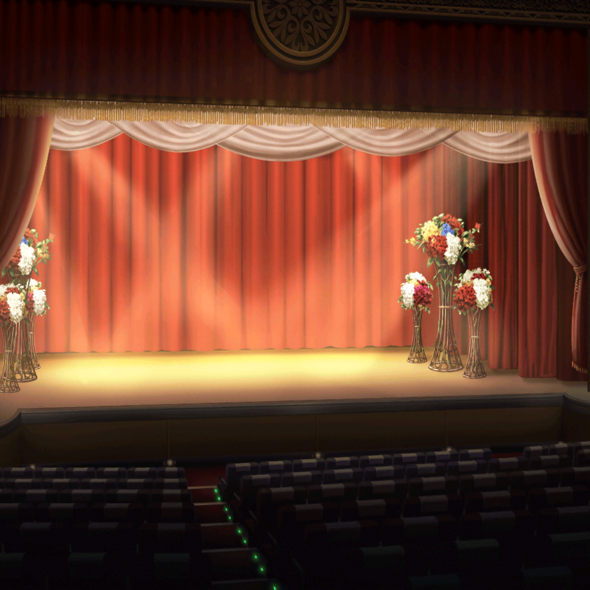

スマイル号 シアター
はぐみ
シアターとうちゃーく！
すっごく広いね！ １万人くらい入りそう！
美咲
そんなに入らないよ……
１万人も船に乗ってたら沈んじゃうよ
こころ
怪盗さーん、来たわよー！ 次はなんの勝負なの！？
怪盗ハロハッピー
ふふ……、次がなんの勝負か、すぐにわかるよ
美咲
あっ、舞台がせり上がってきた……
ずいぶん派手なご登場だね
怪盗ハロハッピー
探偵さん達、開演まで間もなくだよ。
ひとまず早く座席に着きたまえ
美咲
開演ってなんのこと？
怪盗ハロハッピー
それはもちろん、舞台の幕が上がる時間ということさ
はぐみ
舞台が始まるの？
はぐみ、舞台観るの初めてー！ ワクワクしちゃう！
怪盗だったら手品とかしちゃうのかな？
美咲
はぐみ、それマジックショーだから。
あの怪盗が言ってる舞台とは違うから
こころ
２人とも、最前席に行きましょ！
怪盗さんのお手並み拝見よ！
怪盗ハロハッピー
おっと、時間になったね
みんな席に着いたかい？
怪盗ハロハッピー
さあ、それではショータイムならぬ、
ショーブタイムを始めようか。
今回は囚われのお姫様にも手伝ってもらおうかな
花音
囚われの……それってもしかして……？
怪盗ハロハッピー
もちろん君のことだよ、お姫様。
舞台の中央にイスが見えるだろう。
あのイスに座って待っていてくれるかい？
花音
え？ は、はい……？
はぐみ
かのちゃん先輩だ！
わぁ～！ 無事だったよ、こころん！
こころ
花音、待ってなさい！
今、助けるわ！
花音
う、うん……
花音
（さらわれたと思ったら客室で待たされて、
今度はここに連れてこられて……）
花音
（全然状況がわからないよ～……）
美咲
今度は何するわけ？
怪盗ハロハッピー
そうだね、一味違った勝負をしようと思っているんだ
こころ
絶対勝つわよ！
さあ、どんな勝負でもどーんときなさい！
怪盗ハロハッピー
張り切ってくれるのはいいが、次の挑戦者は……君だ。
きれいな黒髪のお嬢さん
美咲
は？
あたし！？
怪盗ハロハッピー
君とはまだ勝負をしていないだろう？
さあ、私と遊んでくれ
怪盗ハロハッピー
……ほら、お姫様も彼女にお願いしたまえ
花音
え？ は、はい……
花音
美咲ちゃん、えっと……お願い
美咲
はぁ……わかった。
で、何をすればいいの？
怪盗ハロハッピー
ここに座っているお姫様に、愛の告白をしてみてくれないか？
美咲
は、はあぁ～！？
怪盗ハロハッピー
私は演じるのが好きだが、人の演技を見るのも好きでね。
君の演技が上手ならお姫様を返そう
はぐみ
告白！
成功すれば、やっとかのちゃん先輩が返ってくる！
こころ
よかったわね、はぐみ！
もうすぐ花音が戻ってくるわ！
怪盗ハロハッピー
さあ、ステージの上へどうぞ。
ここで演じてみてくれ
美咲
断固お断りします
美咲
そもそも、なんでそんなことしなくちゃいけないわけ？
もう、こうなったら……！
美咲
その声、その喋り方、その振る舞いで
怪盗の正体は、最初からわかってるんだ！
美咲
怪盗！
あんたは……！
はぐみ
みーくん、お願い！
かのちゃん先輩に告白して！
こころ
はぐみの言う通りだわ！
ここで花音が戻ってくるかどうか決まるの！
告白の演技、頑張ってちょうだい！
はぐみ
はぐみ、全力で応援するから！
美咲
……っ！
美咲
（ふ、ふたりそろって……そんな真剣な目で見るな！
私が悪いみたいに思うじゃないかっ）
花音
美咲ちゃん、頑張って！
美咲
（花音さんまで！？
てっきり怪盗の正体に気づいてると思ってたのに……！）
美咲
はぁ、わかった……やるよ。
告白すればいいんでしょ、もう……
怪盗ハロハッピー
ふふふ、君ならそう言ってくれると思った。
君はお姫様に愛を伝える王子という設定でやってみたまえ。
では、演技・告白。……スタート！
美咲
え、えと……麗しいお姫様……。
あ、あなたが……好き、です……
怪盗ハロハッピー
そんなものかい？
もっと愛を伝えてごらん
美咲
う……えーと……一目あったその日から……
心を奪われ……
怪盗ハロハッピー
まだまだ気持ちが伝わらないよ。
もっと真剣に
美咲
あなたを常に想ってます……。
とにかく、好きです
美咲
も、もうこれでいいでしょ！？
いきなり告白なんて言われたってわかんないし！
はぐみ
はぐみ、演技わかんないけどダメダメだと思う
こころ
心に響かなかったわね。
これじゃあ勝負は負けかしら
花音
そんなことないよ……！
美咲ちゃんはすごく頑張ったよ！
私には十分響いたよ
美咲
（はは……。
もう、花音さんがよければ、それでいいや……）
怪盗ハロハッピー
告白というのは、もっとスマートにしなければならないよ。
例えば……
怪盗ハロハッピー
『麗しのお姫様よ、私があなたのことをどれほど想っているか
ご存知ですか？
寝ても覚めてもあなたのことばかり考えてしまうのです』
怪盗ハロハッピー
『私の心を奪って離さない罪深きお方……愛しています』
花音
……！！
え、演技なのにドキドキしちゃった。
でもこの演技の感じ、どこかで……？
怪盗ハロハッピー
これぐらいの演技を見せてくれないとね。
では、ここの勝負も私の勝ちだ
怪盗ハロハッピー
ふふ……君達と勝負するのは面白いね！
私をもっともっと楽しませてほしいな。
でないと、お姫様は返せないよ
花音
きゃあ！？
はぐみ
ええ！？
行先告げないで、かのちゃん先輩と一緒に消えちゃったよ！？
こころ
きっとこの先に行ったのよ！
追いかけましょう！
美咲
いつまで怪盗と鬼ごっこすればいいんだろ。
もう疲れてきたから次で終わりにしたい……
怪盗！ 待てー！